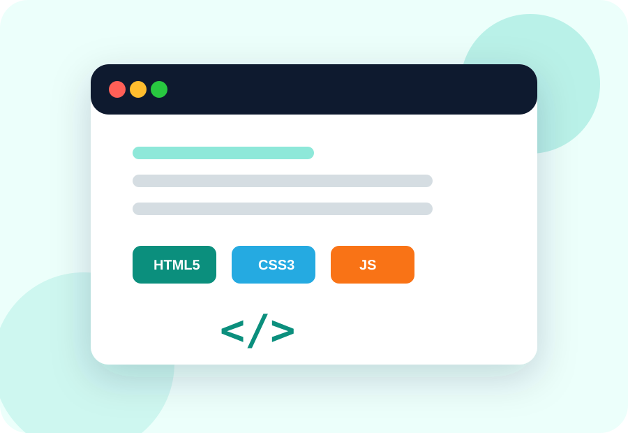

Etapa 1
HTML5: organiza el contenido
Aprende encabezados, párrafos, enlaces e imágenes.
Reto: Crea una página de presentación.
Una plataforma para explorar HTML, CSS, Bootstrap, JavaScript y Flask con explicaciones sencillas, ejemplos y retos prácticos.
Empieza creando una estructura con HTML, agrega estilos con CSS y descubre cómo crear páginas que se adapten a cualquier pantalla. A medida que avances, podrás incorporar interacción con JavaScript y organizar tu proyecto con Flask.
Aquí encontrarás actividades breves para poner en práctica cada explicación, aunque sea tu primera vez programando.

Aprende encabezados, párrafos, enlaces e imágenes.
Reto: Crea una página de presentación.
Aplica tipografía, colores y espaciado.
Reto: Personaliza el diseño de tu página.
Crea tarjetas, menús y columnas responsivas.
Reto: Diseña tres tarjetas para el celular.
Responde a clics y valida formularios.
Reto: Crea un botón con un mensaje.
Descubre rutas y plantillas reutilizables.
Reto: Organiza dos páginas con un menú común.
Copia este ejemplo en un archivo llamado index.html, ábrelo en Chrome y cambia el título por el de tu propia idea.
<!DOCTYPE html>
<html lang="es">
<head><meta charset="UTF-8"><title>Mi página</title></head>
<body>
<h1>¡Mi primera página!</h1>
<p>Estoy aprendiendo desarrollo web.</p>
</body>
</html>Anota tus dudas para retomarlas cuando estudies. Este formulario funciona en tu navegador: no envía los datos a profesores ni al sitio.
Solo se guardan en este navegador.